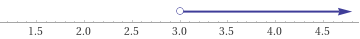
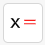
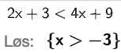
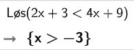

2 Ulikheter
1 Ulikhetstegnet
I delkapittelet om tallmengder, så vi på at vi kunne ha tallmengder som består av elementer, eller som er gitt som åpne og/eller lukkete intervaller.
De åpne, halvåpne og lukkete intervallene kan også skrives med ulikhetssymbol:
| Ulikhetssymbol | Leses som | Betyr |
|---|---|---|
| \(\lt\) | Mindre enn | Det som står på venstre siden av symbolet er mindre enn det som står på høyre siden av symbolet |
| \(\leq\) | Mindre enn eller lik | Det som står på venstre siden av symbolet er mindre enn eller lik enn det som står på høyre siden av symbolet |
| \(\gt\) | Større enn | Det som står på venstre siden av symbolet er større enn det som står på høyre siden av symbolet |
| \(\geq\) | Større enn eller lik | Det som står på venstre siden av symbolet er større enn eller lik enn det som står på høyre siden av symbolet |
1.1 Ulikhetssymbolet og tallinjen

Det er to ulike måter vi kan skrive at vi har en tallmengde som består av alle tall som er større enn 3.
\[ x\in\langle 3, \rightarrow\rangle\] \[x \gt 3 \]
Den siste linjen er også en ulikhet.
2 Hva er ulikheter
I delkapittelet om likninger lærte dere ulike metoder for å finne ut når et uttrykk på venste siden av likhetstegnet er lik uttrykket på høyre siden av likhetstegnet. Et eksempel er å løse likningen
\[x^2-2x=3x-6\]
Denne likningen har to løsninger, \(\underline{\underline{x\in\{2, 3\}}}\).
Men hva om vi ikke er på jakt etter når noe er helt likt? Kanskje vil vi vite når noe er større enn eller mindre enn noe annet? Det kan være når vi ønsker å finne ut hva som er billigst av to forskjellige prismodeller.
En ulikhet består av et ulikhetssymbol med tall eller uttrykk på hver side
Vi skal lære å løse sånne ulikheter her
3 Lineære ulikheter (basert på NDLA)
En ulikhet inneholder gjerne en eller flere ukjente størrelser symbolisert med bokstaver. Det er vanlig å bruke bokstaven \(x\) for den ukjente når ulikheten har én ukjent størrelse.
Et eksempel er ulikheten \[ x + 3 \geq 8 \tag{1}\]
Å løse en ulikhet går ut på å finne hvilke verdier \(x\) kan ha for at ulikheten skal være sann. For eksempel, hvilke verdier av \(x\) i ulikheten ovenfor gjør at \(x + 3\) blir lik eller større enn \(8\)?
3.1 Metode for å løse ulikheter
Langt på vei kan vi løse ulikheter etter de samme prinsipper vi brukte for å løse likninger.
Hvis vi adderer det samme på begge sider av ulikhetstegnet, beholder vi den samme ulikheten mellom venstresiden og høyresiden.
Siden \(5 \lt 9\), så er \(5\)\(+3\) \(\lt 9\)\(+3\)
Hvis vi subtraherer det samme tallet på begge sider av ulikhetstegnet, beholder vi den samme ulikheten mellom venstresiden og høyresiden.
Siden \(9 \gt 5\), så er \(9\)\(-3\) \(\gt 5\)\(-3\)
Hvis vi bruker dette på ulikheten formel 2.1, så får vi
\[\begin{align}\displaylines{x + 3 &\geq& 8 \\ x + 3 -3 &\geq& 8 - 3 \\ x &\geq& 5}\end{align}\]
Vi må alltid snu ulikhetstegnet når vi multipliserer eller dividerer med negative tall
Vi kan addere og subtrahere med samme tall på begge sider i en ulikhet og forsatt beholde den samme ulikheten mellom venstre- og høyresiden.
Vi kan multiplisere og dividere med samme positive tall på begge sider i en ulikhet og fortsatt beholde den samme ulikheten mellom venstresiden og høyresiden.
Vi må snu ulikhetstegnet hvis vi dividerer eller multipliserer med et negativt tall på begge sider av ulikhetstegnet.
Eksempel 1 (Lineær ulikhet) Vi løser ulikheten \(2x+3 < 4x+9\)
\[\require{cancel}\renewcommand{\CancelColor}{\red}\begin{align}\displaylines{2x + 3&<& 4x + 9 \\ 2x - 4x&<& 9 - 3 \\ -2x&<& 6 \\ \dfrac{\bcancel{-2}x}{\bcancel{-2}}&>& \dfrac{6}{-2} \\ x &>& -3}\end{align}\]
Svaret på en ulikhet blir en tallmengde, og vi kan oppgi svaret som \[\underline{\underline{L\in\langle -3, \rightarrow \rangle}}\]
Eksempel 2 (Lineær ulikhet) Løs ulikheten \(\dfrac{x}{3}+\dfrac{1}{2} \leq \dfrac{x}{2}+\dfrac{1}{3}\)
\[\begin{align}\displaylines{\dfrac{x\cdot6}{3}+\dfrac{1\cdot6}{2} &\leq& \dfrac{x\cdot6}{2}+\dfrac{1\cdot6}{3} \\ 2x + 3 &\leq& 3x+2 \\ 2x-3x&\leq& 2-3 \\-x &\leq& -1 \\\dfrac{\bcancel{-}x}{\bcancel{-1}}&\geq& \dfrac{-1}{-1} \\ x &\geq& 1}\end{align}\]
Løsningsmengden for ulikheten er
\[\underline{\underline{L\in[1, \rightarrow \rangle}}\]
3.2 Løse ulikheter med CAS
Vi kan også løse ulikheter med CAS. Her kan vi enten skrive inn ulikheten og trykke på knappen .
Da får vi denne løsningen: 
Alternativt kan vi bruke kommandoordet “Løs”. 
4 Oppgaver
Oppgave 1 Løs ulikhetene uten hjelpemidler, og deretter kontroller svaret ved å løse ulikhetene med CAS.
- \(x-3<5\)
- \(2x+1<3\)
- \(2x-4<x-4\)
Oppgave 2 Løs ulikhetene uten hjelpemidler, og deretter kontroller svaret ved å løse ulikhetene med CAS.
- \(5x-3<2x-6\)
- \(6-5x\geq 6(1-x)\)
- \(x-3\leq2(x+6)\)
Oppgave 3 Løs ulikhetene uten hjelpemidler, og deretter kontroller svaret ved å løse ulikhetene med CAS.
- \(3(x-5)<5(x-2)\)
- \(1-x\leq 1+x\)
- \(3(2x-3)<6x-9\)
Oppgave 4 Løs ulikhetene uten hjelpemidler, og deretter kontroller svaret ved å løse ulikhetene med CAS.
- \(\dfrac{x}{2}-\dfrac{x}{3} > \dfrac{1}{6}\)
- \(\dfrac{5}{2}x+\dfrac{x}{3}-\dfrac{7}{4} \geq 3-\dfrac{x}{6}\)
- \(\dfrac{3}{2}(2x - 3) < 9\left(\dfrac{x}{3} + \dfrac{1}{2}\right)\)